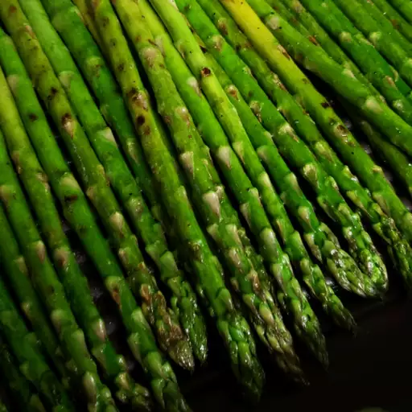

Grilled Asparagus

How to Make Grilled Asparagus.
Wondering how to cook asparagus on the grill? Here’s a brief overview of what
you can expect when you make homemade grilled asparagus: Toss the asparagus with olive oil,
season, and grill until lightly charred.
How Long to Cook Asparagus On the Grill
The asparagus should be perfectly cooked after three to five minutes on a lightly grill heated to high heat. You’ll know the asparagus spears are done when they are lightly charred and tender when pierced with a fork.
Ingredients
- 1 pound fresh asparagus spears, trimmed
- 1 tablespoon olive oil
- salt and pepper to taste
Steps
- Preheat an outdoor grill for high heat and lightly oil the grate.
- Lightly coat the asparagus spears with olive oil. Season with salt and pepper to taste.
- Cook asparagus on the preheated grill, turning often until lightly charred and fork-tender about 3 to 5 minutes.
Home